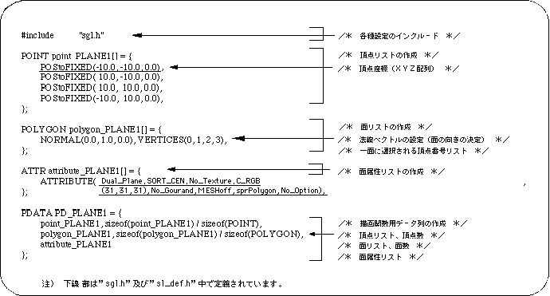
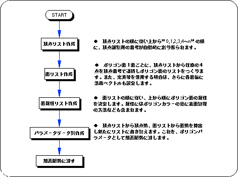
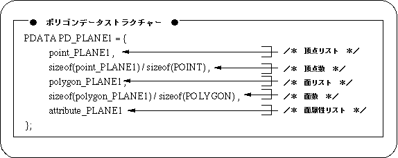

Return to previous page | Return to menu | Go to next page
The following list shows the polygon drawing parameters that are read as “polygon.c” in the program. By rewriting this part, the shape, size, number of faces, surface attributes, etc. of the polygon can be changed.



Next, the polygon data creation procedure will be explained based on the data string to be created.
List of initial coordinates of polygon vertices. In the order of the list, “0, 1, 2, 3, 4 to n” and identification numbers are automatically assigned to the vertices.
Variable name: POS2FIXED (vertex_x, vertex_y, vertex_z),
Represents each vertex coordinate. Coordinate values can be assigned to floating-point values by using the macro “POStoFIXED” (POS2FIXED is a macro supported by SGL).
Based on the vertex list, create a list of polygon faces and normal vectors.
Variable name: NORMAL (vector_x, vector_y, vector_z),
Define a normal vector for each face. A normal vector is a unit vector that expresses the orientation of a polygonal surface and extends perpendicularly to the polygonal surface. Each
parameter is an XYZ value that represents the direction of the parabolic vector, and the normal vector must always be specified as a unit vector.
Variable name: VERTICES (v1, v2, v3, v4),
Create a list of which vertices in the vertex list will be used to form the polygon face. The number of vertices selected is always four. However, only when the 3rd and 4th vertex numbers are the same, an apparently triangular polygon can be expressed.
Also, there is no relationship between the vertex number and the edge join order. The edges are always joined clockwise from the first vertex selected by the list.
Set the surface attribute of the polygon for each face according to the order of the face list.
For details on the settings, see the chapter “Chapter 7: Polygon face attributes”.
Set the surface attribute of the polygon. Each parameter has a total of 8 settings including front / back judgment, Z sort, texture, color, goo processing, drawing mode, sprite inversion processing, and other functions.
(For details, refer to Chapter 7: Polygon surface attributes)
Create a data structure to pass each setting of polygon data to the library function “slPutPolygon” as a parameter.
Create a data string to actually pass to “slPutPolygon”.
Here, the number of vertices and the number of polygon faces are newly calculated from information such as the vertex list and added to the parameter data string.
